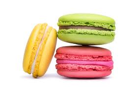

Home
Macaroons

Description
Macarons are delicate, almond-based meringue cookies with a slightly crisp shell and a soft, chewy interior, typically sandwiched around a flavorful filling like ganache, buttercream, or jam.
Ingredients
Shells
- 100g aged egg whites (about 3 large eggs), at room temperature
- 100g granulated sugar
- 100g almond flour, finely ground and sifted
- 100g powdered sugar (confectioners' sugar)
- Pinch of cream of tartar (optional, but helps stabilize meringue)
- Gel food coloring (optional)
Buttercream Filling
- 100g unsalted butter, softened
- 200g powdered sugar, sifted
- 1-2 tablespoons milk or cream
- 1 teaspoon vanilla extract
Steps
- Prepare your ingredients: Measure all ingredients precisely. Sift almond flour and powdered sugar together twice, then whisk them to combine thoroughly. This is your "Tpt" (tant pour tant) mixture. Separate your egg whites at least a day in advance and let them sit at room temperature to "age" – this helps them whip better.
- Make the meringue: In a clean, grease-free bowl, whisk the egg whites on medium speed until foamy. Add the cream of tartar (if using). Gradually add the granulated sugar, a spoonful at a time, while continuing to whisk. Increase speed to high and beat until stiff, glossy peaks form. If using food coloring, add it at this stage.
- Macaronage (Folding) Gently fold the sifted Tpt mixture into the meringue in three additions. Use a spatula to fold by scraping down the sides and bringing the mixture up from the bottom of the bowl. The goal is to achieve a "lava-like" consistency – it should flow slowly off your spatula in a ribbon, and you should be able to make a figure eight without breaking the stream. Be careful not to overmix, or your shells will be flat.
TBC